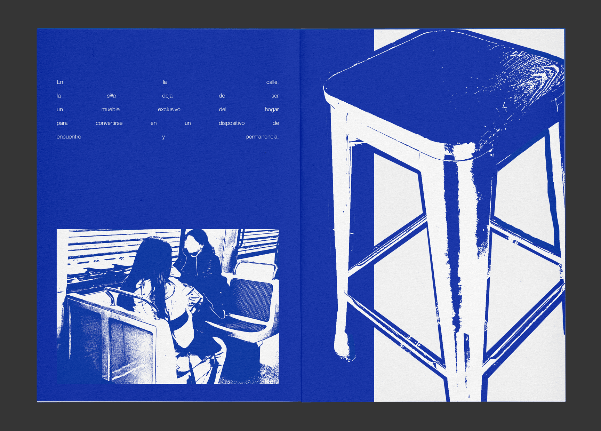
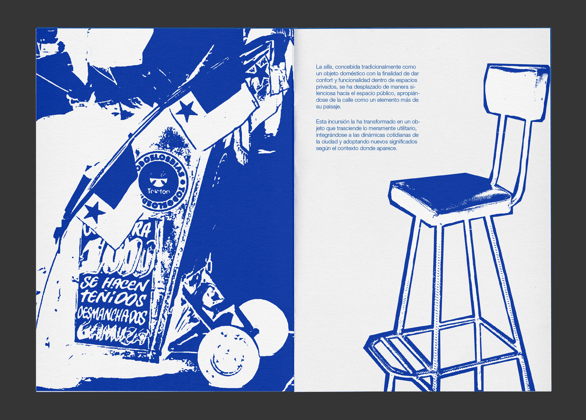
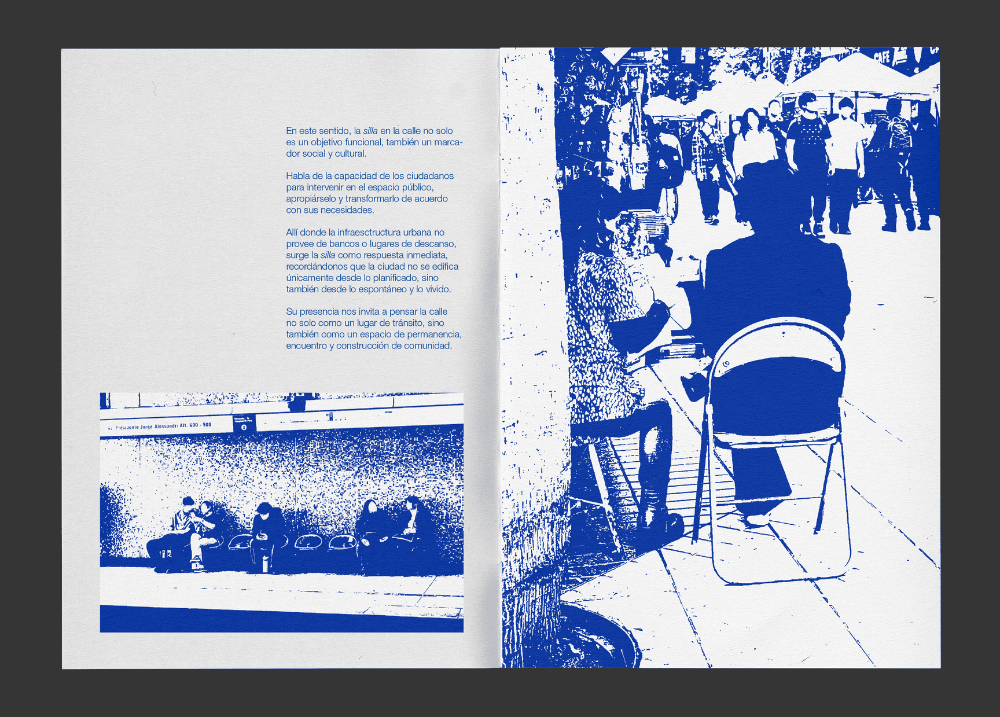

Fanzine: Pausa urbana
Fanzine A5 desarrollado en 2025 para el curso de Diseño Editorial. A través de una colección fotográfica de sillas encontradas en las calles de Santiago, el proyecto documenta lo cotidiano y la apropiación del espacio urbano. Maquetado íntegramente con tipografía Helvetica, busca generar un contraste entre el rigor editorial y la espontaneidad del archivo callejero.